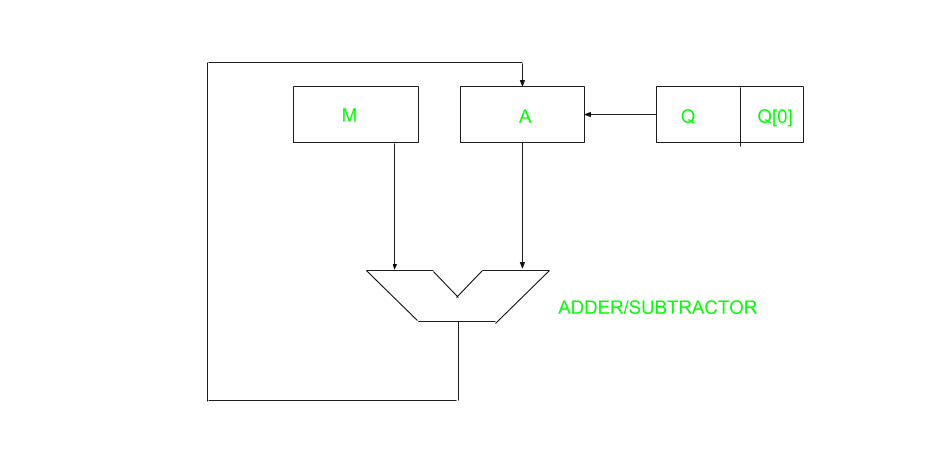
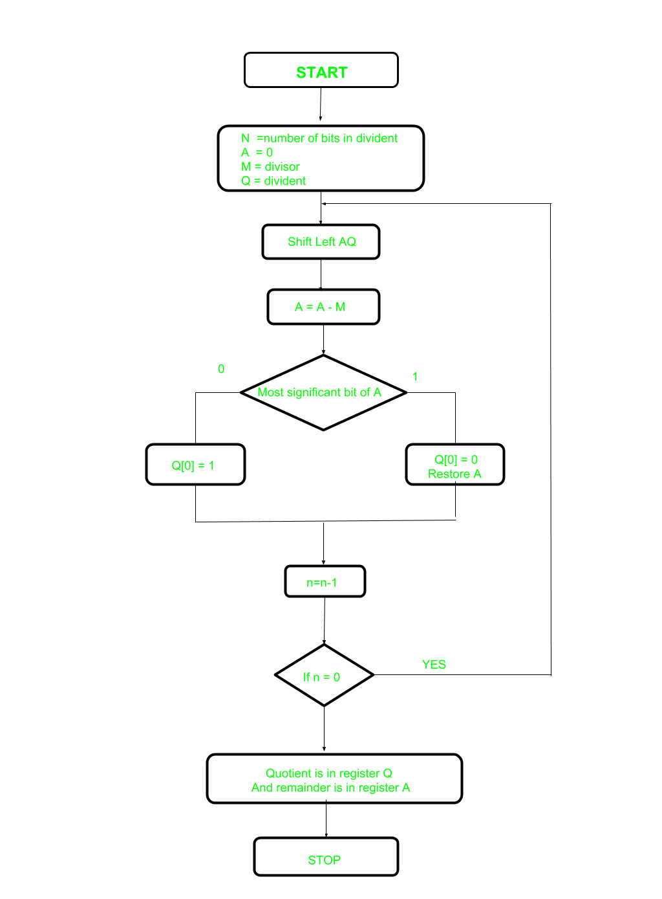

A division algorithm provides a quotient and a remainder when we divide two number. They are generally of two type slow algorithm and fast algorithm. Slow division algorithm are restoring, non-restoring, non-performing restoring, SRT algorithm and under fast comes Newton–Raphson and Goldschmidt.
In this article, will be performing restoring algorithm for unsigned integer. Restoring term is due to fact that value of register A is restored after each iteration.

Here, register Q contain quotient and register A contain remainder. Here, n-bit dividend is loaded in Q and divisor is loaded in M. Value of Register is initially kept 0 and this is the register whose value is restored during iteration due to which it is named Restoring.

Let’s pick the step involved:
- Step-1: First the registers are initialized with corresponding values (Q = Dividend, M = Divisor, A = 0, n = number of bits in dividend)
- Step-2: Then the content of register A and Q is shifted right as if they are a single unit
- Step-3: Then content of register M is subtracted from A and result is stored in A
- Step-4: Then the most significant bit of the A is checked if it is 0 the least significant bit of Q is set to 1 otherwise if it is 1 the least significant bit of Q is set to 0 and value of register A is restored i.e the value of A before the subtraction with M
- Step-5: The value of counter n is decremented
- Step-6: If the value of n becomes zero we get of the loop otherwise we repeat fro step 2
- Step-7: Finally, the register Q contain the quotient and A contain remainder
Examples:
Perform Division Restoring Algorithm Dividend = 11 Divisor = 3
| n | M | A | Q | Operation |
|---|---|---|---|---|
| 4 | 00011 | 00000 | 1011 | initialize |
| 00011 | 00001 | 011_ | shift left AQ | |
| 00011 | 11110 | 011_ | A=A-M | |
| 00011 | 00001 | 0110 | Q[0]=0 And restore A | |
| 3 | 00011 | 00010 | 110_ | shift left AQ |
| 00011 | 11111 | 110_ | A=A-M | |
| 00011 | 00010 | 1100 | Q[0]=0 | |
| 2 | 00011 | 00101 | 100_ | shift left AQ |
| 00011 | 00010 | 100_ | A=A-M | |
| 00011 | 00010 | 1001 | Q[0]=1 | |
| 1 | 00011 | 00101 | 001_ | shift left AQ |
| 00011 | 00010 | 001_ | A=A-M | |
| 00011 | 00010 | 0011 | Q[0]=1 |
Remember to restore the value of A most significant bit of A is 1. As that register Q contain the quotient, i.e. 3 and register A contain remainder 2.